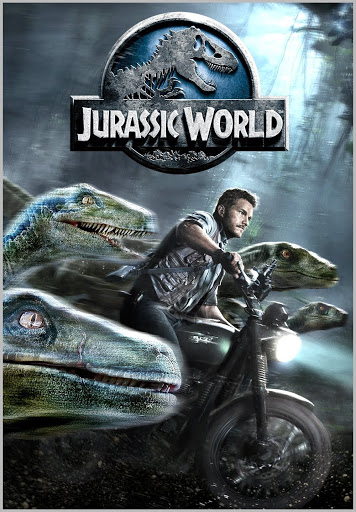
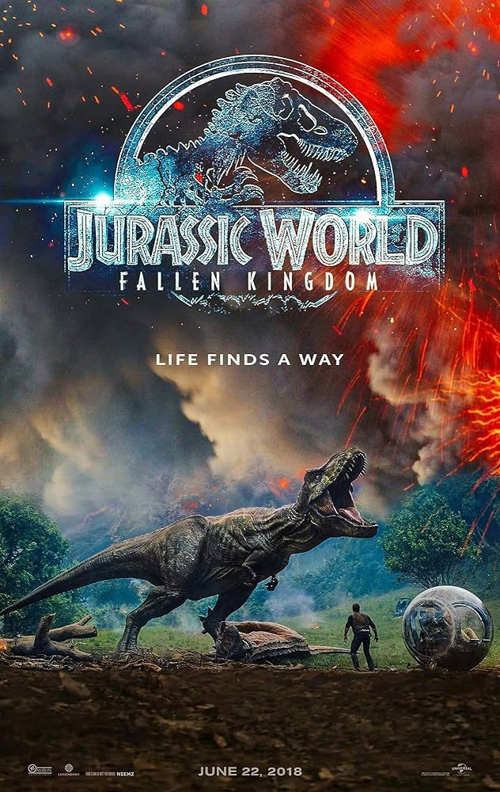
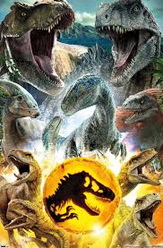

|  |
 |
 |
Jurassic World (2015):A new park, Jurassic World, opens on the same island with advanced technology. However, a genetically modified hybrid dinosaur escapes, wreaking havoc and forcing visitors to flee to survive. |
Jurassic World: Fallen Kingdom (2018):Following the collapse of Jurassic World, a group attempts to save the dinosaurs from a volcanic eruption. However, they uncover a plot to auction off the dinosaurs, leading to their release into the human world. |
Jurassic World: Dominion (2022):Dinosaurs now live among humans, creating a global conflict. The protagonists of both sagas unite to stop a greater threat derived from genetic manipulation and the loss of control of dinosaurs. |